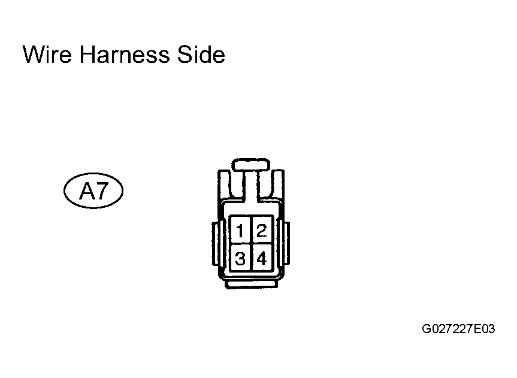
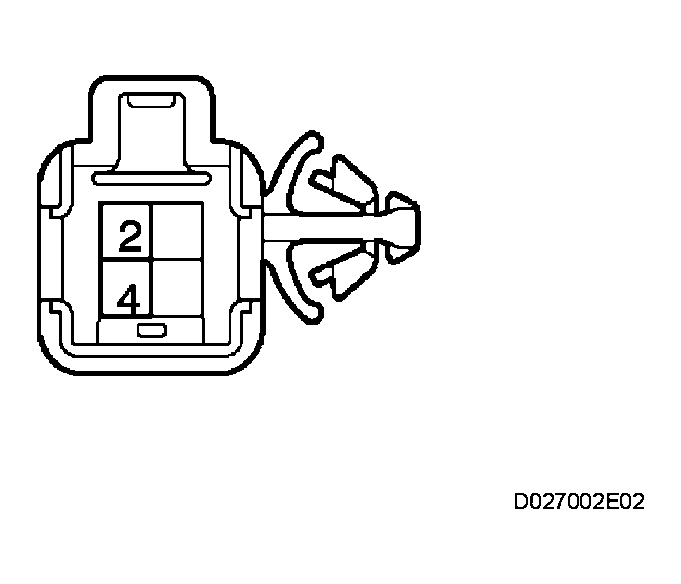

Inspection Procedure
WARNING: This page is about a different variant/trim than selected.
- CHECK WIRE HARNESS (TRANSMISSION CONTROL SWITCH - BODY GROUND)
- Disconnect the A7 switch connector.
- Measure the resistance of the wire harness side connector.
Standard resistance
TESTER CONNECTION SPECIFIED CONDITIONTester Connection Specified Condition 4 - Body ground Below 1 Ω
NG: REPAIR OR REPLACE HARNESS AND CONNECTOR

Courtesy of © TOYOTA, LICENSE AGREEMENT TMS1002OK: Go to Next Step
- INSPECT TRANSMISSION CONTROL SWITCH (O/D MAIN SWITCH)
- Measure the resistance of the switch.
Standard resistance
TESTER CONNECTION SPECIFIED CONDITIONTester Connection Switch Condition Specified Condition 2 - 4 Continuously press transmission control switch Below 1 Ω 2 - 4 Release transmission control switch 10 kΩ or higher
NG: REPLACE TRANSMISSION CONTROL SWITCH

Courtesy of © TOYOTA, LICENSE AGREEMENT TMS1002OK: Go to Next Step
- Measure the resistance of the switch.
- CHECK WIRE HARNESS (TRANSMISSION CONTROL SWITCH - ECM)
- Disconnect the E4 ECM connector.
- Measure the resistance of the wire harness side connector.
Standard resistance
TESTER CONNECTION SPECIFIED CONDITIONTester Connection Switch Condition Specified Condition E4-6 (ODMS) - Body ground Continuously press transmission control switch Below 1 Ω E4-6 (ODMS) - Body ground Release transmission control switch 10 kΩ or higher
NG: REPAIR OR REPLACE HARNESS AND CONNECTOR
OK: PROCEED TO NEXT CIRCUIT INSPECTION SHOWN IN PROBLEM SYMPTOMS TABLE